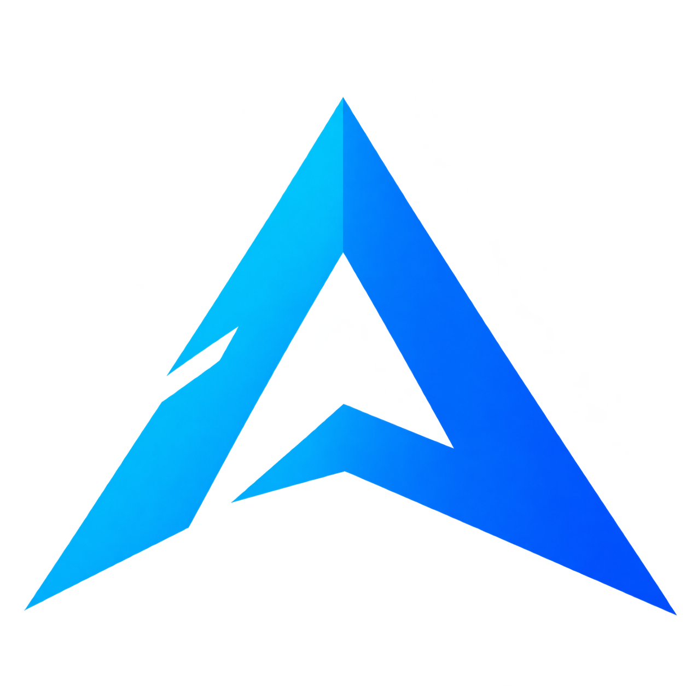

Configuraciones
Archivos de Openbox y ajustes para componentes de escritorio. Revisa cada módulo antes de aplicarlo a tu instalación.
Ver configuraciones →
> Preparando secuencia...
La animación dura 20 segundos. Los mensajes y registros son demostrativos.
Archcraft GE reúne configuraciones, temas, herramientas y guías para personalizar tu entorno Archcraft. Un proyecto modular que puedes explorar, adaptar y mejorar a tu manera.
GE no pretende reemplazar Archcraft: ofrece recursos organizados para ajustar la experiencia de escritorio y construir una configuración propia.
Archivos de Openbox y ajustes para componentes de escritorio. Revisa cada módulo antes de aplicarlo a tu instalación.
Ver configuraciones →Estilos para Rofi y otros elementos visuales. Ajusta colores, transparencias y detalles para dar identidad a tu escritorio.
Explorar temas →Herramientas auxiliares para instalar, revisar y gestionar componentes. Lee sus instrucciones antes de ejecutarlas.
Ver herramientas →Pasos de instalación, dependencias, atajos y solución de problemas para que puedas entender qué cambia cada módulo.
Leer documentación →Una organización pensada para separar estilos y opciones. Personaliza los archivos según el hardware y las preferencias de tu equipo.
Ver perfiles →Explora el código, revisa los cambios y aporta sugerencias. La evolución del proyecto se organiza desde su repositorio.
Ver actividad →Archcraft GE es una colección de configuraciones y recursos comunitarios que amplía las posibilidades de personalización de Archcraft. Su enfoque es modular: puedes consultar los archivos, seleccionar lo que te sirva y mantener el control de tu entorno.
Antes de aplicar cualquier configuración, realiza una copia de seguridad y comprueba los programas requeridos en la documentación correspondiente.
Configuraciones y utilidades organizadas por componentes, con documentación de instalación y notas para una integración más segura.
Abrir descargas ↗Una consola visual inspirada en el arranque de Linux. Los registros son ficticios y forman parte de la presentación de la página.
Nota: esta consola no lee el sistema operativo, no ejecuta comandos y no comprueba actualizaciones reales.